Data Platform Operations
- Pipeline monitoring
- Job failure triage
- Data quality monitoring
- Performance optimization
- Incident support
SourceTX can provide ongoing engineering, monitoring, optimization, and production support after implementation.

Flexible support models that keep data, AI and cloud platforms reliable, secure, and cost-efficient after go-live.
Clear ownership, transparent reporting, and continuous improvement.
Review the current platforms, pipelines, alerts, and support gaps.
Establish monitoring, runbooks, and incident response.
Improve reliability, performance, and cost on a regular cadence.
Extend and modernize platforms as business needs change.
We'll shape a managed services model around your platforms and service expectations.